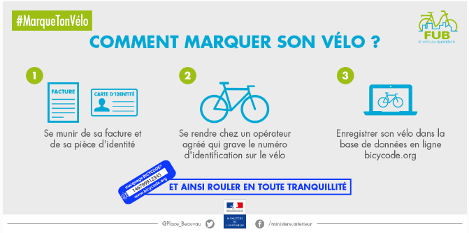

Au bas de la page, téléchargez les plans de parcours à vélo à Hoenheim. Voici également quelques recommandations et conseils pour vous rendre au travail ou parcourir les routes de campagne en toute sécurité :
Testez votre vélo en vérifiant l’état :
- des freins,
- de la sonnette,
- des éclairages,
- des pneus,
- pensez aussi à graisser la chaîne, et resserrer les vis et les écrous si nécessaire.
L’équipement obligatoire
- un gilet rétro-réflechissant certifié (même pour le passager) hors agglomération, de nuit et par visibilité insuffisante ,
- un feu avant (jaune ou blanc) et arrière (rouge) en état de marche ,
- un siège enfant (jusqu’à 5 ans) doté de repose-pieds et de courroies d’attaches ,
- un avertisseur sonore ,
- des freins avant et arrière en état de marche ,
- des dispositifs rétro-réfléchissants sur les pédales ,
- des bandes latérales réfléchissantes sur les pneus ainsi qu’un écarteur de danger.
Ce qui est obligatoire pour les moins de 12 ans
- un casque homologué et attaché ,
- des feux avant et arrières en état de marche ,
- un dispositif de freinage sur chaque roue et un système réfléchissant ,
- le port d’un gilet rétro-réfléchissant quand la visibilité est insuffisante ,
- un système de signalisation sonore.
Si le port du casque n’est pas obligatoire pour les adultes, il est fortement conseillé. Vous pouvez également mettre des lunettes afin d’éviter les projections.

Où circuler ?
Il est essentiel de respecter le code de la route. En vélo, vous êtes des usagers de la route fragiles.
Empruntez les pistes cyclables, à défaut roulez à droite en maintenant un espace d’au moins un mètre entre le vélo et les autres véhicules ou le trottoir. Attention toutefois aux voitures garées dont les portières peuvent s’ouvrir brusquement !
Le code de la route est le même que pour les voitures alors ne brûlez pas les feux rouges, ne roulez pas sur les trottoirs, ne prenez pas de sens interdits.
Pour votre sécurité, signalez toujours votre changement de file ou de direction.
Ne roulez pas vite quand le trafic est dense, et ne pas zigzaguez pas pas entre les véhicules.
Placez vous devant les véhicules aux intersections et cédez la priorité aux piétons.
Ne roulez pas à deux de front mais en file indienne.
Le saviez-vous ?
Depuis le 1er juillet 2015, il est interdit aux conducteurs de porter à l’oreille tout dispositif susceptible d’émettre du son.
Cette mesure s’applique à tous les usagers de la route circulant avec un volant (poids lourds, voiture) ou un guidon (moto, scooter, cyclomoteur et vélo).
L’interdiction ne concerne pas seulement la conversation téléphonique mais également la musique et la radio, dès lors qu’elles transitent par un dispositif en contact avec les oreilles. Cette infraction est passible d’une contravention de 4e classe.
Contre les vols, marquez votre vélo !
Pensez toujours à attacher le cadre et la roue avant à un point fixe, même pour une courte durée, à l’aide d’un antivol solide en forme de U, qui est le plus efficace.
Le marquage de vélo est aussi un dispositif efficace pour le retrouver.
Muni d’une facture et une pièce d’identité, rendez-vous chez un opérateur agréé qui grave un numéro d’identification sur votre vélo. Vous enregistrez ensuite ce numéro dans la base de données en ligne bicycode.org. En cas de vol, vous pourrez le signaler sur cette plateforme.
Le dispositif est aussi très utile lorsque vous achetez un vélo d’occasion. Vous pouvez vérifier sur cette plateforme s’il n’est pas volé.
Source : interieur.gouv.fr
Plan des parcours à vélo à Hoenheim :
{kind=link}
{kind=link}